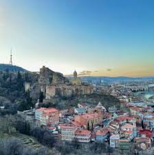
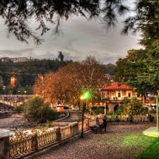

Tbilisi
Tbilisi is the capital and largest city of Georgia, lying on the banks
of the Kura River with a population of around 1.2 million people. Tbilisi was founded
in the fifth century AD by Vakhtang I of Iberia, and since then has served as the capital of various
Georgian kingdoms and republics. Between 1801 and 1917, then part of the Russian Empire,
Tiflis was the seat of the Caucasus Viceroyalty, governing both the northern and the southern parts of the Caucasus.[8][9]
Because of its location at the crossroads between Europe and Asia, and its proximity to the lucrative Silk Road, throughout history,
Tbilisi has been a point of contention among various global powers.
To this day, the city's location ensures its position as an important transit route for energy and trade projects.
Tbilisi's history is reflected in its architecture, which is a mix of medieval, neoclassical, Beaux Arts, Art Nouveau,
Stalinist, and Modern structures.
Historically, Tbilisi has been home to people of multiple cultural, ethnic, and religious backgrounds,
though its population is overwhelmingly Eastern Orthodox Christian.
Notable tourist destinations include cathedrals Sameba and Sioni, Freedom Square, Rustaveli Avenue and Agmashenebeli Avenue, medieval Narikala Fortress,
the pseudo-Moorish Opera Theater, and the Georgian National Museum.

.jpg)
qutaisi
is one of the oldest continuously inhabited cities in the
world and the third-most populous city in Georgia after Tbilisi and Batumi.
Situated 221 kilometres (137 miles) west of Tbilisi, on the Rioni River,
it is the capital of the western region of Imereti.
Historically one of the major cities of Georgia,
it served as political center of Colchis in the Middle Ages as capital of the Kingdom of Abkhazia
and Kingdom of Georgia and later as the capital of the Kingdom of Imereti.
From October 2012 to December 2018,
Kutaisi was the seat of the Parliament of Georgia as an effort to decentralise the Georgian government.
Archaeological evidence indicates that the city functioned as the capital of the Colchis in the sixth to fifth centuries BC.
It is believed that, in Argonautica, a Greek epic poem about Jason and the Argonauts and their journey to Colchis,
author Apollonius Rhodius considered Kutaisi their final destination as well as the residence of King Aeëtes.

Batumi
is the second-largest city of Georgia
and the capital of the Autonomous Republic of Adjara,
located on the coast of the Black Sea in Georgia's southwest,
20 kilometers north of the border with Turkey.
It is situated in a subtropical zone at the foot of the Caucasus.
Much of Batumi's economy revolves around tourism and gambling
(it is nicknamed "The Las Vegas of the Black Sea"),
but the city is also an important seaport and
includes industries like shipbuilding,
food processing and light manufacturing.
Since 2010, Batumi has been transformed by the construction of modern high-rise buildings,
as well as the restoration of classical 19th-century edifices lining its historic Old Town.
mcxeta
Mtskheta Georgian: მცხეთა, romanized:
mtskheta is a city in the region of Mtskheta-Mtianeti, Georgia.
It is one of the oldest cities in
Georgia as well as one of the oldest continuously inhabited cities in the world.
It is located approximately 20 km (12 mi) north of Tbilisi, at the confluence of the Mtkvari and Aragvi rivers.
Currently a small provincial capital, for nearly a millennium
until the 5th century AD,
Mtskheta was a large fortified city,
a significant economical and political centre of the Kingdom of Iberia.
Due to the historical significance of the town and its several outstanding churches and cultural monuments,
the "Historical Monuments of Mtskheta"
became a UNESCO World Heritage Site in 1994.
As the birthplace and one of the most vibrant centers of Christianity in Georgia,
Mtskheta was declared as the "Holy City" by the Georgian Orthodox Church in 2014.
In 2016, the Historical Monuments of Mtskheta were placed by UNESCO under Enhanced Protection
,
a mechanism established by the 1999 Second Protocol
to the 1954 Hague Convention for the Protection
of Cultural Property in the Event of Armed Conflict.
Geography
Mtskheta is set on a lowland, surrounded by mountains,
at the confluence of the two rivers, Mtkvari and Aragvi.
The city is approached from the north by the Greater Caucasus and from the south by the Lesser Caucasus mountains.
.jpg)
Telavi
Telavi (Georgian: თელავი [tʰeɫavi]) is the main city and administrative center of Georgia's eastern province of Kakheti.
Its population consists of some 19,751 inhabitants (as of the year 2017).[1] The city is located on the foothills of the Tsiv-Gombori
Range at 500–800 m (1,600–2,600 ft) above sea level.
The first archaeological findings from Telavi date back to the Bronze Age.
One of the earliest surviving accounts of Telavi is from the 2nd century AD, by Greek geographer Claudius Ptolemaeus, who mentions the name
Teleda (a reference to Telavi). Telavi began to transform into a fairly important and large political and administrative center in the 8th
century. Interesting information on Telavi is provided in the records by an Arab geographer,
Al-Muqaddasi of the 10th century,
who mentions Telavi along with such important cities of that time's Caucasus as Tbilisi, Shamkhor, Ganja, Shemakha and Shirvan.
Speaking about the population of Telavi, Al-Muqaddasi points out that for the most part it consisted of Christians.
Ikalto (c. 800)
From the 10th until the 12th century, Telavi served as
the capital of the Kingdom of Kakheti and later Kingdom
of Kakhet-Hereti.
During the Golden Era of the Georgian State (12th–13th centuries), Telavi turned into one of the most important political and economic centers
of the Georgian State. After the disintegration of the united Georgian Kingdom in the 15th century, the role of Telavi started to decline and
the city eventually became an ordinary town of trade and crafts.
Telavi regained its political importance in the 17th century when it became
a capital of the kingdom of Kakheti. By 1762, it turned into the second capital (after Tbilisi)
of the united Eastern Georgian Kingdom of Kartl-Kakheti.
The reign of King Erekle II, who was born and died in this city,
was a special epoch in the history of Telavi. During this period (1744–1798) it grew into a strategic and cultural centre.
Erakle II established there a theological seminary and founded a theatre.
Erekle II's reforms touched upon all aspects of life in the
country. They changed fundamentally the political, economical and cultural orientation of Kartli-Kakheti and, subsequently of the whole
Georgia. His name became a symbol of freedom and national independence of the Georgian people. Erakle II is
still called affectionately
"Patara Kakhi" (Little Kakhetian),
and his heroic deeds are described in folk literature.
Streets of Telavi city
In 1801,
after the Kingdom of Kartli-Kakheti was annexed by the Russian Empire,
Telavi lost its status as a capital.
In the 19th century,
the city was the administrative center of the Telavi uezd within the Tiflis Governorate.
During that period,
the economy of the city was mainly composed of small-scale industries (leather painting, pottery production,
wine-making, etc.), commerce and agriculture. The town's population was about 12,000
in the end of the 19th century
(including about 9,000 Armenians and 2,000 ethnic Georgians).[2]
.jpg)
rustavi
Rustavi (Georgian: რუსთავი [ɾustʰavi]) is a city in the southeast of Georgia, in the region of Kvemo Kartli and 20 km (12 mi)
southeast of capital Tbilisi. It has a population of 132,333 (January 2023[4]), making it the fourth most populous city in Georgia.
Its economy is dominated by the Rustavi Metallurgical Plant.
Rustavi is one of the ancient towns of Georgia. The history of Rustavi has two phases:
an early history from ancient times until the city was destroyed in the 13th century and modern history from the Soviet era to the present.
The foundation of Rustavi is dated from time immemorial. 11th-century Georgian chronicler, Leonti Mroveli in his work "Georgian Chronicles"
connects the foundation of the city to Kartlos, the eponymous ancestor of Georgians, whose wife had founded a town along the Kura river called
Bostan-Kalaki (lit. "city of gardens"). The same chronicler, who also worked on
“The life of the Kings”, mentions the town Rustavi among those castles, which opposed Alexander the Great's army, although it is
proved that Alexander had never invaded Iberia. Rustavi is mentioned among such ancient towns as Uplistsikhe, Urbnisi, Mtskheta and
Sarkineti. It could be assumed that Rustavi as a city had been founded at least in the 5th–4th centuries B.C. Besides the manuscripts, the
excavations of the castle Rustavi prove that Rustavi was an important
political and administrative center of Iberia. In late 4th century A.D Trdat of Iberia had built a church and a canal in Rustavi.
During the reign of Vakhtang I of Iberia (5th century) Rustavi took an important part in the political life of the Kingdom of Iberia.
At the beginning of the 6th century, in 503, the Sassanids conquered Iberia and turned it into an ordinary Persian province ruled by a marzpan
(governor). However, Byzantine Emperor Heraclius's offensive in 627 and 628 brought final victory over the Persians and ensured Byzantine
predominance in Georgia, until the invasion of the Arabs. In the struggle against Arab occupation Rustavi belonged to the Principality
of Kakheti, the latter would form the Kakhetian kingdom, whose ruler Kvirike III the Great, installed an Eristavi (duke) in Rustavi.
On Kvirike's death, Kakheti was temporarily annexed to the Kingdom of Georgia.[5][6] As soon as the Arabs were defeated,
in 1068 Georgia was invaded by the resurgent Turk-Seljuks from Central Asia, under the command of Sultan Alp Arslan.
There was a terrible battle between king Bagrat IV of Georgia and the Seljuks, where Bagrat was bitterly defeated and as a result,
the king of Kakheti gained independence developing closer contact with the Turkish-Seljuks and securing independence in this way.
After the Seljukid invasions of Georgia, allied forces took Tbilisi and Rustavi and gave it to the Emir of Tbilisi.
During that time Rustavi declined, its economy was ruined, and due to its strategic location it only remained as a well-fortified town
in the hands of the emirs in Tbilisi. In 1069 Bagrat IV defeated emir Fadlun and captured the fortress of Rustavi,
Partskhisi, and Agarani. During the anti-Seljuk campaigns led by David IV Rustavi played an essential role in securing Georgia's
southern boundaries. Rustavi was finally destroyed after Timur's invasion of Georgia.
Rustavi was rebuilt as a major industrial center during the Soviet era. The development of Rustavi was part of Joseph Stalin's
accelerated industrialization process, and included ironworks, steelworks, chemical plants and an important railway station on the Tbilisi
–Baku railroad line. Rustavi is the site of approximately 90 large and medium-sized industrial plants
Kostava Street, Rustavi
The core of the city's industrial activity was the Rustavi Metallurgical Plant, constructed in 1941–1950 to process iron ore from nearby
Azerbaijan. Stalin brought workers from various regions in Georgia, specifically from the poorer rural provinces of Western Georgia.
Rustavi became a key industrial centre for the Transcaucasus region. The industrial activity expanded to include the manufacture of steel
products, cement, chemicals, and synthetic fibers.
May 1944 was a significant time in the history of modern Rustavi. Geologists began to define
the soil of the place where the metallurgical works were to be built. The area was nearly empty,
and there were only temporary lodgings and slums available. Many people arrived at Rustavi, coming from different parts of Georgia.
The first newspaper came out on 30 August 1944. It was called “Metallurgiisatvis” (meaning "For Metallurgy" in Georgian).
Rustavi celebrated frequent housewarming parties as many people migrated to the city each day. In 1948 the first streets were
“baptized” in Rustavi. The first street was named after the Young Communist League, the second, after the builders of Rustavi,
and the third, after its ancient name Bostan-Kalaki.
On 19 January 1948, a decree of the Supreme Soviet of Georgian Soviet Socialist Republic declared Rustavi a town
of republican importance. On 27 April 1950, the whole town celebrated the production of the first industrial Georgian steel.
It was founded on the roots of the famous ancestors Khalibs.
Factories
German POWs who were captured
in World War II were enlisted to build the city of Rustavi.
Modern Rustavi is divided into two parts—Dzveli Rustavi (Old Rustavi) and Akhali Rustavi (New Rustavi).
Old Rustavi adheres to
Stalinist architectural style while New Rustavi is dominated
by a multitude of
Soviet-era block apartments.
The fall of the Soviet Union in 1991 proved disastrous
for Rustavi, as it also caused the collapse of the
integrated Soviet economy
of which
the city was a key part. Most of its industrial plants were shut down
and 65% of the city's population became unemployed,
with the attendant social problems of high crime and acute poverty that such a situation brings.
The population shrank from 160,000 in
the mid-1990s to 116,000 in 2002
as residents moved elsewhere in search of work.
.jpg)
Gori
Gori Georgian: გორი is a city in eastern Georgia, which serves as the regional capital of Shida Kartli and is
located at the confluence of two rivers, the Mtkvari and the Liakhvi. Gori is the fifth most populous city in Georgia.
Its name comes from the Georgian word gora (გორა),
meaning "heap", "hill",[1] or "mountain".
A settlement known here from the Hellenistic period, with the Gori Fortress built at least in 7th century,
it received town status in the 12th century. Gori was an important military stronghold in the Middle Ages and maintains
a strategic importance due to its location on the principal highway connecting eastern and western parts of Georgia.
In the course of its history, Gori has been invaded by the armies of regional powers several times. The city was occupied by Russian
troops during the 2008 Russo Georgian War.
Gori is also known as the birthplace of Soviet Leader and politician Joseph Stalin, ballistic missile designer Aleksandr Nadiradze,
and philosopher Merab Mamardashvili.
Gori is located 86 kilometres west of Georgia's capital Tbilisi,
at the confluence of the rivers Mtkvari and Greater Liakhvi,
588 meters (1,929 ft) above sea level. The climate is humid subtropical,
transitioning to humid continental climate, with warm
and moderately humid weather. Summer is usually hot. The average annual
temperature is 11.2 °C (52.2 °F), minimal in January
(0.4 °C or 31.3 °F) and maximal in July and August (22.1 °C or 71.8 °F). The maximum precipitation falls in May
(65.8 mm or 2.6 in) and minimum in February
(28.2 mm or 1.1 in). Precipitation here averages 507 mm (20.0 in).
Highest recorded temperature: 38.0 °C (100.4 °F) on 13 August 2006[2]
Lowest recorded temperature: 22.2 °C (8.0 °F) on 16 December 2004[2]
Climate data for Gori (1991 2020 normals, extremes 1981-2020)
Gori Fortress as of 1642, by an Italian missionary, Cristoforo Castelli
The territory of Gori has been populated
since the early Bronze Age. According to medieval Georgian chronicles, the town of Gori was founded
by King David IV (r. 1089 1125) who settled refugees from Armenia there.
[4] However, the fortress of Gori
(Goris-Tsikhe) appears to have been in use already
in the 7th century, and archaeological evidence indicates the
existence of an urban community in Classical Antiquity. In 1299, Gori was captured by the Alan tribesmen fleeing the Mongol conquest of
their original homeland in the North Caucasus.
The Georgian king George V recovered the town in 1320, pushing the Alans back over
the Caucasus mountains.
Gori Fortress on the hilltop
With the downfall of the medieval Georgian kingdom,
Gori strategically located at the crossroads of major transit routes was frequently
targeted by foreign invaders, and changed its masters on several occasions.
It was first taken and sacked by Uzun Hassan of the Ak Koyunlu
in 1477, followed by Tahmasp I of Persia in the mid-16th century.
By the end of that century, Gori briefly passed to the Ottomans through the
1578 90 Ottoman Persian War, and became their major outpost in Georgia until being recovered by the Georgians under Simon I of Kartli after
heavy fighting in 1599. The town was once again garrisoned by the Persians
under Shah Abbas I in 1614. Following successive occupations by
the Ottomans (1723 35) and Persians (1735 40s),
Gori returned to Georgian control under the kings Teimuraz II and Erekle II whose efforts
helped to advance economy and culture in the town. Following the Russian annexation
of Georgia, Gori was granted the status of a town within
the Gori Uyezd of the Tiflis Governorate in 1801.
It grew in size and population throughout the 19th century. A plan of 1824 shows the town on
the hill slopes below the citadel, and a moat around it.[5] The town
was destroyed in the 1920 earthquake, and almost completely rebuilt in
the Soviet period. An important industrial center in Soviet times, Gori suffered from an economic collapse and the outflow of the population
during the years of a post-Soviet crisis
of the 1990s.
Gori is close to the Georgian Ossetian conflict zone. It is connected
to breakaway South Ossetia's capital Tskhinvali via a
railroad spur which has been defunct since the early 1990s. Since the 2000s, Georgia has increased the military infrastructure in and around
the city. Thus, the Central Military Hospital was relocated from Tbilisi
to Gori and re-equipped in October 2006.[6] On January 18, 2008,
Georgia's second NATO-standard base to accommodate the 1st Infantry Brigade (Georgia) of the Georgian Ground Forces was established at
Gori.[7] The Georgian Agrarian Science Academy Branch was established in
the city in 1995; this became Sukhishvili
University in 2003.
2008 conflict
Main article: Occupation of Gori
A damaged apartment building in Gori.
In the 2008 Russo-Georgian War, the town came under aerial
attack by the Russian Air Force from the outset of the conflict. Military
targets and residential districts of Gori were hit by the airstrikes,
resulting in civilian injuries and deaths.[8][9] Human Rights Watch
(HRW) claimed that Russian forces had indiscriminately deployed cluster
bombs in civilian areas around Gori. According to HRW, on August
12 Russian forces dropped cluster bombs in the centre of Gori, killing
11 civilians and wounding dozens more.[10] Russian military officials
deny using cluster munitions in the conflict, calling the HRW
assertion "slanderous" and questioning the HRW's objectivity.[11] Numerous
unexploded "bomblets" have
been found by locals and HRW
employees.[12]
By August 11, Georgian military personnel, government, and most
residents had fled the city, which was then captured and occupied by
the Russian
military and South Ossetian separatist militia. HRW
accused the militia of unleashing a campaign of looting,
arson, kidnapping
and other attacks against the remaining civilian population.[13] The Russian
and South Ossetian forces withdrew from the city on August 22,
2008.[14] The following day Units of the Georgian Army returned to
Gori. However, Russian checkpoints
remained near Gori as well as
in so-called
buffer zones near
the borders with Abkhazia and South Ossetia.[15]
.jpg)
.jpg)
Poti
Poti (Georgian: ფოთი [pʰotʰi]; Mingrelian: ფუთი; Laz: ჶაში/Faşi or ფაში/Paşi) is a port city in Georgia, located on the
eastern Black Sea coast in the region of Samegrelo-Zemo Svaneti in the west of the country. Built near the site of the ancient Greek
colony of Phasis and deriving its name from the same, the city has become a major port city and industrial center since the early 20th
century. It is also home to a main naval base and the headquarters of the Georgian Navy
The name Poti is linked to Phasis, but the etymology is a matter of a scholarly dispute. "Phasis" (Greek: Φάσις) is first recorded in Hesiod's
Theogony (c. 700 BC) as a name of the river, not a town. Since Erich Diehl, 1938, first suggested a non-Hellenic origin of the name
and asserted that Phasis might have been a derivative of a local hydronym, several explanations have been proposed, linking the name to the
Proto-Georgian-Zan *Poti, Svan *Pasid, and even to a Semitic word, meaning "a gold river".[2]
Ancient and medieval history
Phasis river, 19th century
The recorded history of Poti and its environments spans over 26 centuries. In Classical antiquity and the early Middle Ages,
the area was occupied by the Greek polis of Phasis which was established by
the colonists from Miletus led by one Themistagoras at the very
end of the 7th, and probably at the beginning of the 6th century BC. The famed
Greek semi-mythological voyage of Jason and the Argonauts in
search of the Golden Fleece would have entered Georgia at this port and traveled
up the river to what is today Kutaisi.
After many years of uncertainty and academic debate, the site of this settlement now
seems to be established, thanks to underwater
archaeology under tough conditions. Apparently, the lake which
the well-informed Ancient Greek
author Strabo reported as bounding one side
of Phasis has now engulfed it, or part of it. Yet, a series of questions regarding the towns
exact location and identification of its ruins
remain open due largely to the centuries-long
geomorphological processes of the area as the
lower reaches of the Rioni
are prone to changes
of course across the wetland. Phasis appears to
have been an important center of trade and culture in
Colchis throughout the Classical
period.[3][4] The section along the
river Phasis was a vital component of the presumed trade route
from India to the Black Sea, attested
by Strabo and Pliny.[5]
.jpg)
sokhumi
Sukhumi (see also other names below) is a city in a wide bay on the Black Sea's eastern coast. It is both the capital and largest
city of the Abkhazian Region of Georgia,
a partially recognised state that some countries
consider a part of Republic of Abkhazia.
The city has been controlled by Abkhazia since the Abkhazian war in 1992–93.
The city, which has an airport, is a port, major rail
junction and a holiday resort because of its beaches,
sanatoriums, mineral-water spas and semitropical climate. It is also a member
of the International Black Sea Club.[2]
Sukhumi's history can be traced to the
6th century BC, when it was settled by Greeks, who named it Dioscurias. During this time and
the subsequent Roman period, much of the city disappeared
under the Black Sea. The city was named Tskhumi when it became part of the
Kingdom of Abkhazia and then the Kingdom of Georgia. Contested by local princes,
it became part of the Ottoman Empire in the 1570s, where
it remained until it was conquered by the Russian
Empire in 1810. After a period of conflict during the Russian Civil War, it became part
of the independent Georgia, which included Abkhazia,
in 1918.[3] In 1921, the Democratic Republic of Georgia was occupied by Soviet Bolshevik
forces from Russia. Within the Soviet Union, it was
regarded as a holiday resort. As the Soviet Union broke
up in the early 1990s, the city
suffered significant damage during the Abkhaz–Georgian
conflict. The present-day population
of 60,000 is only half of the population living
there toward the end of Soviet rule.
.jpg)
thank you for visiting my site i hope you like it if you want to know more visit this sites:
.jpg)
.jpg)